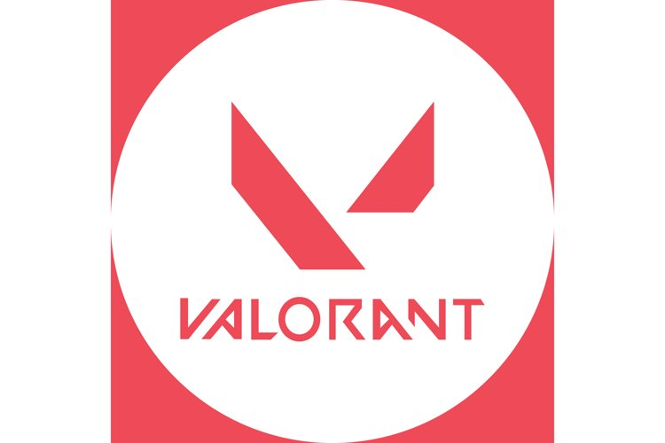

About Me
Hi! My name is Anna Sun (she/her), and I am a freshman at Barnard College of Columbia University studying computer science.
Throughout high school I was fascinated with computers. This led to me enrolling in every programming course my school had to offer. After coming to college, I am now interested in the fields of software engineering, AI, and cybersecurity. I am constantly working hard both in school and out of school. I often go beyond my education to teach myself about areas I am interested in. So far, the coding languages I have taught myself are Javascript, HTML/CSS, C#, and C.
Some of my hobbies outside of computer science are playing video games, crocheting, and exploring NYC. I have loved to play video games ever since I was young. I've played everything from Minecraft to Valorant, and even taught myself to build my own PC in 2020. I am currently on the Columbia Val X team, which is our all-womens Valorant team. Crocheting is a hobby I picked up over quarantine, as I have always been a crafty person and this was the perfect way to pass time while stuck at home. Exploring NYC is my favorite way to spend my weekends. I will often hop on the 1 train and go downtown to Chinatown, eat a yummy meal, and then walk around for hours exploring the city!
I tutored over 30 students in math ranging from elementary to high school levels. I assisted them with school homework, projects, test preparation, and other math-related assignments.
I researched current events in technology such as the advancement of AI, the Twitter takeover, the CS code of ethics, and more. I also identified 15 potential guest speakers, wrote scripts for podcast episodes, and wrote blog posts on themed current issues in technology.
My team won 1st place in the Bloomberg BPuzzled puzzle hunt at Columbia University by obtaining a school-high of 6 challenging puzzles solved in 2 hours.

I am a member of Columbia Esports' Val X Team, our only all-women Valorant team. I participate in competitions such as CVAL and the Ivy League Valorant Tournament. I collaborate closely with my teammates to develop strategies, analyze opponents, and execute coordinated gameplay tactics.